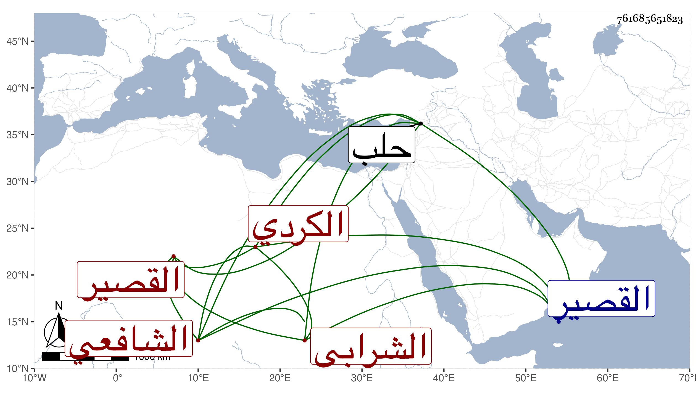

0902Sakhawi.DawLamic.ITO20230111-ara1.EIS1600.761685651823
Biography ID: 761685651823
72
علي بن محمد بن العلاء بن الشمس الكردي الشرابي نسبة للشرابية من أعمال القصير الشافعي نزيل حلب . التمس مني تلميذه الجمال يوسف بن التقي أبي بكر الحلبي إمام تمراز كان الإجازة له ووصفه له بالشيخ الإمام العالم العلامة الزاهد الورع المتوجه للمصالح العامة كبناء المساجد وإيقاف كتب العلم على طلبته بما يصل إليه مما يقصد بره به فكتبت له في رمضان سنة ست وتسعين كراسة أرسل بها إليه .
